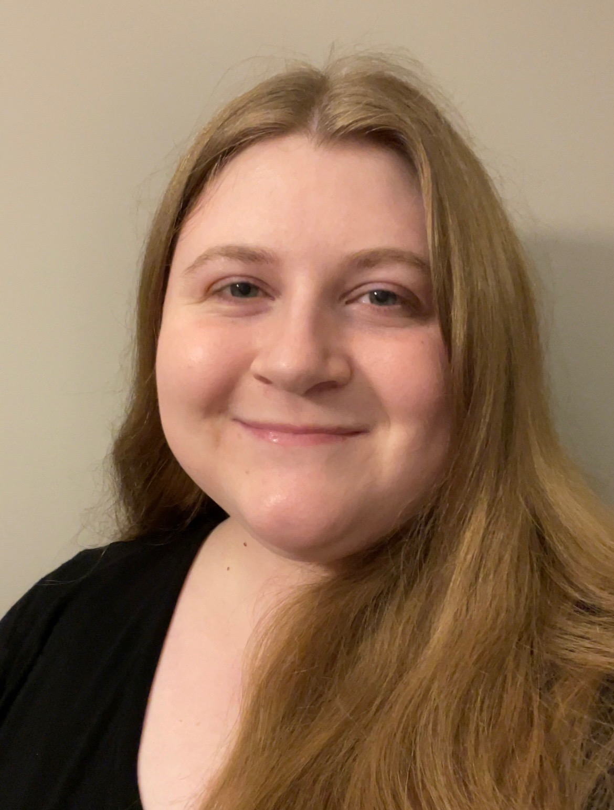

About Me
My name is Devon Hartwick. I grew up in Columbia, Missouri, and graduated from Battle High School in 2018. I am a senior at the University of Missouri. I am majoring in communication. My focus area is mediated communication. I am also minoring in sociology. I am expecting to graduate in May of 2022. Currently, I work at the University Hospital. I am a nutrition associate in the patient kitchen. In the future, I would like to get a job as a user experience designer. I would also enjoy a career as a user experience researcher. After I get my bachelor’s degree, I plan on working towards a graduate certificate in user experience and usability. This program is through the University of Missouri. I have also thought about taking courses to obtain a user experience design certificate from Google.
My Resume
This is a quote that inspires me
"We cannot solve problems with the kind of thinking we employed when we came up with them." -Albert Einstein